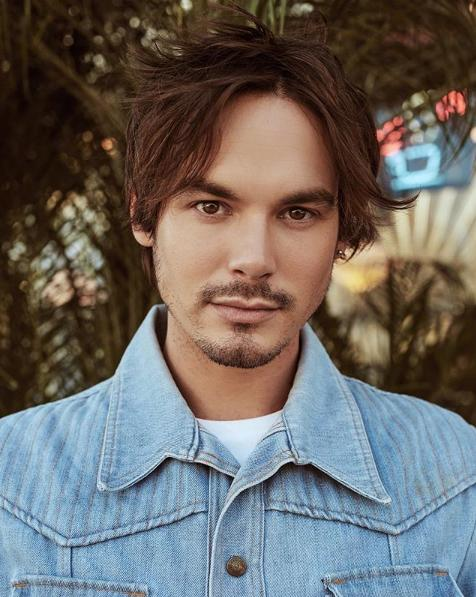

Sasha Pieterse
Alison DiLaurentis
Sasha Pieterse-Sheaffer é uma atriz, cantora, compositora e modelo sul-africana de ascendência norte-americana. Ela é mais conhecida por interpretar Alison DiLaurentis na série de televisão Pretty Little Liars e seu spin-off, Pretty Little Liars: The Perfectionists, ambos da Freeform.
Saiba mais
Lucy Hale
Aria Montgomery
Karen Lucille "Lucy" Hale, é uma atriz, cantora e compositora norte-americana. É mais conhecida por ter atuado no elenco principal da série Pretty Little Liars, no papel de Aria Montgomery
Saiba mais
Troian Bellisario
Spencer Hastings
Troian Avery Bellisario é uma atriz americana. Ela é mais conhecida por interpretar Spencer Hastings na série televisiva Pretty Little Liars.
Saiba mais
Ashley Benson
Hanna Marin
Ashley Victoria Benson é uma atriz, diretora e modelo norte-americana. É mais conhecida por interpretar Hanna Marin na série televisiva Pretty Little Liars. Além da famosa série, Ashley participou de diversos filmes, como por exemplo, Pixels, De Repente 30, As Apimentadas etc.
Saiba mais
Shay Mitchell
Emily Fields
Ashley Victoria Benson é uma atriz, diretora e modelo norte-americana. É mais conhecida por interpretar Hanna Marin na série televisiva Pretty Little Liars. Além da famosa série, Ashley participou de diversos filmes, como por exemplo, Pixels, De Repente 30, As Apimentadas etc.
Saiba mais
Ian Harding
Ezra Fitzgerald
Ian Michael Harding é um ator e escritor americano nascido Alemanha. É mais conhecido pelo seu papel em Pretty Little Liars como Ezra Fitzgerald. Em fevereiro de 2017 foi anunciado que Ian irá estrelar a nova série de comédia da Fox Thin Ice ao lado da atriz e cantora Bridgit Mendler.
Saiba mais
Keegan Allen
Toby Cavanaugh
Keegan Phillip Allen é um ator e cantor, que nasceu nos Estados Unidos. Ficou mais conhecido ao interpretar Toby Cavanaugh em Pretty Little Liars. É filho do ator americano Phillip R. Allen e da artista plástica Joan Snyder. Keegan é ex-cunhado da cantora Lana Del Rey.
Saiba mais

Tyler Blackburn
Caleb Rivers
Tyler Jordon Blackburn é um ator e cantor americano. É mais conhecido por interpretar Caleb Rivers na série Pretty Little Liars.
Saiba mais